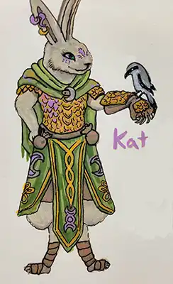
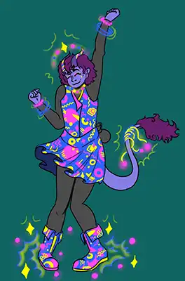
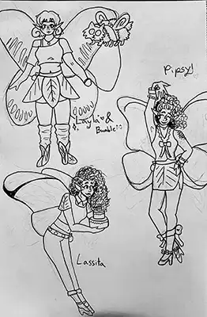

The Fey Folk
The feywild is a diverse landscape of fantastical creatures. Ranging from the well-known Satyrs to the less-known Kiarpi, the feywild's inhabitants are nevertheless strange and fascinating in their own right. Below you will find a description of some of the more common Fey species, but due to their elusive nature, not all will be listed and some information may be incomplete.
Harengon
- Rarity: Common
- Native Court: All Seasonal
- Average Alignment: Chaotic Good
Harengon are a race of sapient anthropomorphic hares who live across the seelie courts. As varied as any sapient race, the harengon are likely the most “normal” of the fey folk you might encounter. While influenced by the desire to cause mischief that guide most fey, these hare folk don’t typically care for destruction or violence making them decently peaceful. Harengon were released in the Wild beyond the Witchlight adventure module, but this site has expanded lore for these people, click below to learn more about the in-depth lore regarding the Harengon of this world.
Read MoreCentaurs
- Rarity: Uncommon
- Native Court: Summer
- Average Alignment: Neutral Good
Half horse, half humanoid, Centaurs are a well known but reclusive people. Typically living a nomadic lifestyle, centaur communities travel in caravans and rely on hunting for food. They are seen as more serious than most fey, even to the point of being oblivious to metaphor.
Sprites
- Rarity:Common
- Native Court:All
- Average Alignment:Chaotic Neutral
Sprites are the most well known fey of all time, but they aren’t a species, they are a classification of species! There are many kinds of sprites, their form and abilities often related to whatever environment they are native to.
Pixies
mostly women, these little ladies have beautiful butterfly wings and partying personalities!
Brownies
Appearing as gnomes with dragonfly wings, brownies are the biggest sprites. Sweet, down to earth, and wise brownies thrive in more domestic situations, but don’t enrage one unless you want to meet their Unseelie Side. All brownies have a Boggart, which is both a form they can take and a spirit that overtakes them in times of great emotion.
Quicklings
small and fast, these creatures hate slowing down for “slowlings” but are otherwise very fun to be around!
Dobies
The most reserved and anxious of all sprites, these creatures appear as small men with very large ears, and no wings! They are often in groups, and prefer to find a household or other keep to maintain rather than explore.
Leprechauns
Somewhere between sprite and spirit, leprechauns are the most fickle of the sprites, and they prefer to stick to their own dens. As a result, not much is known about them, but they are believed to be able to grant wishes.
Satyrs
- Rarity: Common
- Native Court: All Seasonal
- Average Alignment: Chaotic Neutral
Satyrs are some of the most widespread people of the fey. inhabiting just about any forest no matter the plane, these fauns make anywhere they settle more magical. Bound by nature and magic to performance and music, satyrs usually have a knack for instruments, dance, or other arts. It is common for satyrs to break away from their families when they come of age to explore and perform their art, and return to the family whenever they wish.
Eladrin
- Rarity: Uncommon
- Native Court: All
- Average Alignment: True Neutral
Eladrin are the Elves that never left the feywild, typically taking on features related to the court that they inhabit. They are infused with the natural magics of the feywild, but they are often isolated from other inhabitants as other fey find their tendency towards government and Society offputting. Eladrin are the only fey creatures to truly participate in any kind of social hierarchy, making them closer to the elves of the material plane than the fey of the wilds.
Summer
Summer Eladrin are fiery, passionate and loud. They partake in games of hunting and dancing. They are infused with the flame of the summer sun and the light of the Queen Titania.
Autumn
Autumn eladrin are quiet, clever, and creative. Occasionally stuck in their own heads, they like to wander and learn about the world around them. Their eyes glow with lantern light and their voices whisper like the cold winds of change.
Winter
Winter eladrin are serious, stern, and strong. Occasionally they come off as harsh, tending to be introverted but fiercely loyal to those they call their own. Their shoulders bear the comforting weight of quiet like snow atop a roof.
Spring
Spring eladrin are cheerful, wise, and playful. They prefer to spend their time lounging under trees, eating fruit, and socializing. Their spirits and homes are blessed by the bloom of new life.
Nymphs
- Rarity: Rare
- Native Court: All
- Average Alignment: True Neutral
Nymphs is the umbrella term for a particular nature spirit, one bound to a particular land formation and charged with its maintenance and protection. These spirits vary greatly in personality, but usually reflect the landscape which binds them. They almost always appear as youthful and beautiful women, with the exception of the Fossergrim.
Nymphae
Spirits of the plains, these women protect the fields and grasslands to which they are bound. Their soul is tied to the earth itself, and thus it is nigh impossible to kill a Nymph.
Dryads
Spirits of the trees, dryads are one of the most varied of the nymph species. Bound to a singular tree, these creatures can move through whole forests via the bark and leaves. They maintain the forest and are generally peaceful creatures.
Naiads
spirits of ponds and lakes, occasionally of rivers, these creatures are very docile and will only attack if you directly harm their body of water. They are very friendly and often make friends with the sprites that settle near them.
Oreads
spirits of mountains, these giantesses are strong and large as the mountain they are bound to. While friendly to those who approach with admiration, these ladies are not fond of socialization and prefer to stay to themselves.
Fossergrim
Bound to rivers and waterfalls, these are the most rare of the nymph species. Appearing as old men dressed in chainmail, fossergrim are fierce protectors of their land, but most protect more than just the waterfall. Often times there is something more behind the waterfall, and the fossergrim protects it with his life.
Key NPCs
Art of the Characters








